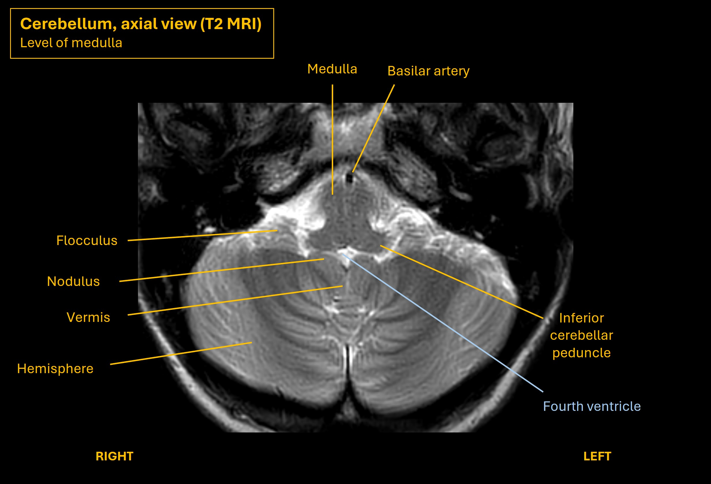
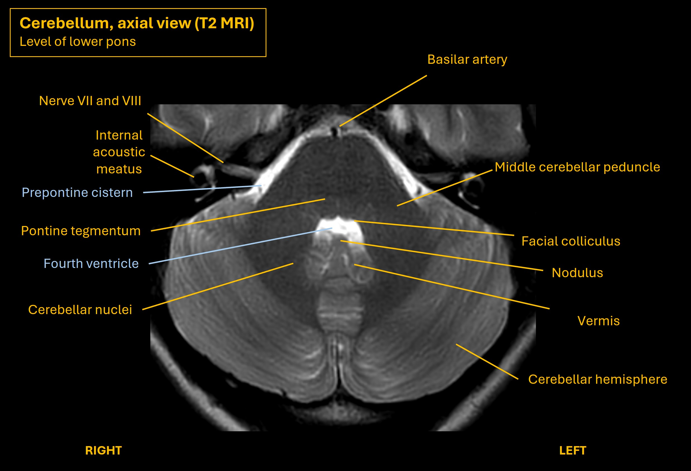
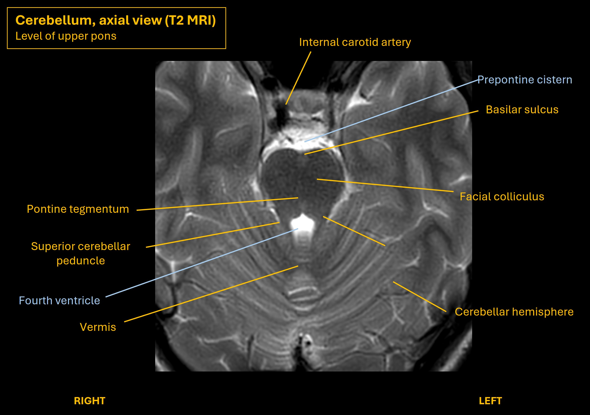
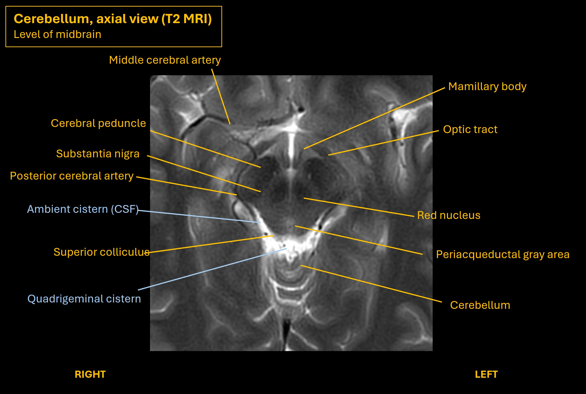
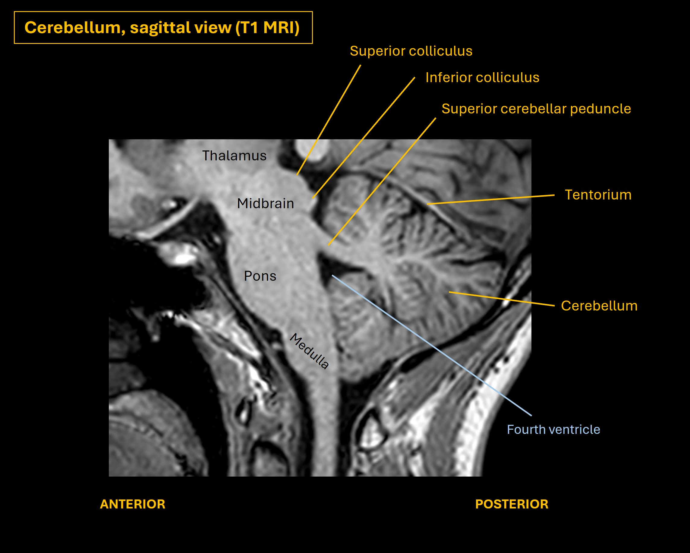
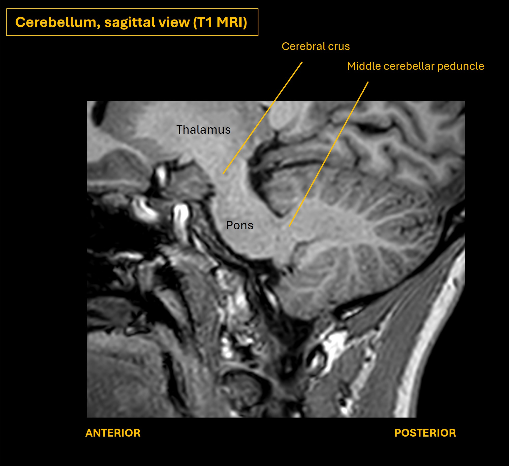

Case 2. Clumsy hand
Where is the lesion?
The problem is an isolated right upper limb issue. There is no weakness or numbness – the issue is clumsiness and inaccuracy on both fine and gross movements that this patient would normally have no issues with. He experienced these holding items and writing, and the exam shows ataxia in the right arm – missing a target, with tremor on approach, and messy, crude movements on alternating between tapping the both sides of the right hand.
The signs localise to the cerebellum and are in the right arm alone. To be more specific we can think about what part of the cerebellum is affected.
The cerebellum - key anatomy and functionThe cerebellum is relatively small but has enormous multi-directional connections with the brain, brainstem and body. It is an extremely important part of the nervous system and lesions in the cerebellum are disabling.
It has three sections, with two hemispheres either side of the midline (vermis), and the flocculonodular part. Different names are used for these - the posterior lobes for the hemispheres, the anterior lobe for the vermis, and the flocculonodular lobe (also called the vestibulocerebellum). They have different functions, with lesions manifesting differently.
The cerebellum connects with the brainstem via the three peduncles - inferior, middle and superior. The middle is very large - forming two broad 'arms' either side of the pons. Many tracts enter and leave the cerebellum through these, involved in control of many functions - posture, balance, gait, targetted limb movements, eye movements and speech.
The images below show axial and sagittal views of the cerebellum and illustrate key features and relationships with the brainstem.






Lesions in different parts of the cerebellum have different clinical effects, so to an extent we can localise them within the cerebellum.
VermisThe vermis takes input from the spinocerebellar tracts, sending signals from the body concerning its position. The output eventually goes back into the body and influences posture and balance.
Vermis lesions cause instability of gait, stance, and sitting balance (truncal ataxia). Individual limbs do not tend to display cerebellar signs however – the ataxia is shown by the following:
In this case, gait is intact, so this sounds less likely where the lesion is.
Vestibulocerebellum - flocculonodular lobeThe vestibulocerebellum is made of the the flocculus (somewhat lateral) and nodulus (central, next to the vermis) - visible on the axial MRI images above at the level of the medulla. This is part of the inferior cerebellum. It has lots of afferent and efferent connections with the vestibular system and the eyes.
Lesions affect balance and stance, in addition to sometimes showing other ‘vestibular’ features such as vertigo, which resembles peripheral vestibular disorders such as vestibular neuritis. However, this doesn’t localise completely, as vertigo can be seen in various cerebellar lesions, not just the vestibulocerebellum.
Again, the features do not conform to a lesion here. There is no vertigo, balance and gait are intact and the eye examination is normal.
Cerebellar hemispheresThe cerebellar hemispheres take input from the premotor parts of the brain then return it - so they act somewhat 'upstream' of a planned movement. There are multiple pathways, but a major one controls coordination of individual limbs.
This pathway has two parts; the afferent (brain to cerebellum) is cortico-ponto-cerebellar, and the efferent is dentato-rubro-thalamic. There are several steps to each limb.
The left cerebral cortex parts involved in motor planning send corticopontine fibres to the left pons. These then project pontocerebellar fibres to the cerebellum via the middle cerebellar peduncle (MCP), otherwise known as the brachium conjunctivum. There is decussation – the left fibres pass via the right MCP to the right cerebellar hemisphere.
The efferent pathway then begins – the cerebellar hemisphere projects to the dentate nucleus, then fibres pass out via the superior cerebellar peduncle (SCP) and decussate again. They then go to the ventrolateral (VL) nucleus of the thalamus, or pass via the red nucleus as an intermediate stop before going to the thalamus; these fibres are called dentatorubrothalamic fibres. Finally, the VL projects thalamocortical fibres which go to the motor cortex. From here the motor cortex projects to the contralateral body via the corticospinal tract.
This pathway is shown below - start with the corticopontine fibres (purple), and follow the path, ending in the corticospinal tract (red).

There’s an important point here: the afferent limb crosses in the pons before entering the cerebellum via the MCP, and the efferent crosses again in the midbrain before rising into the thalamus. The eventual motor output from the cortex crosses again in the medullary pyramids before reaching the limbs.
This means that a lesion affecting the efferent pathways right cerebellar hemisphere, dentate nucleus or SCP will produce ipsilateral limb ataxia . This is also true of a right MCP lesion, affecting the afferent pathway.
In contrast, efferent pathway lesions in the red nucleus or the ascending tract going to the thalamus after the decussation will produce contralateral limb ataxia.
The clinical consequence of a lesion in the cerebellar hemispheres or the middle or superior peduncles is ipsilateral limb ataxia (or contralateral if post-decussation as above), manifesting with clumsy, inaccurate movements, and on examination dysmetria (under/overshooting during reaching movements, sometimes called 'past-pointing') and intention tremor. The most pronounced ataxic tremors happen due to lesions in the dentate nucleus or its outflow tract, as well as in the red nucleus.
This patient’s lesionThe best explanation is a problem in the right cerebellar hemisphere, dentate, SCP or MCP, causing ipsilateral upper limb ataxia.
What about the leg, which is spared? There is somatotopic organisation of the cerebellar structures, but its exact mapping is debated. It probably isn’t organised into single large areas controlling specific body segments - unlike the motor and sensory homunculi in the cerebral cortex.
We can’t really be more specific than saying the right cerebellar hemisphere – somewhere - or its input or output tracts. It could be the hemispheric grey matter, the white matter, the dentate nucleus, or the MCP or SCP.
What is the lesion?